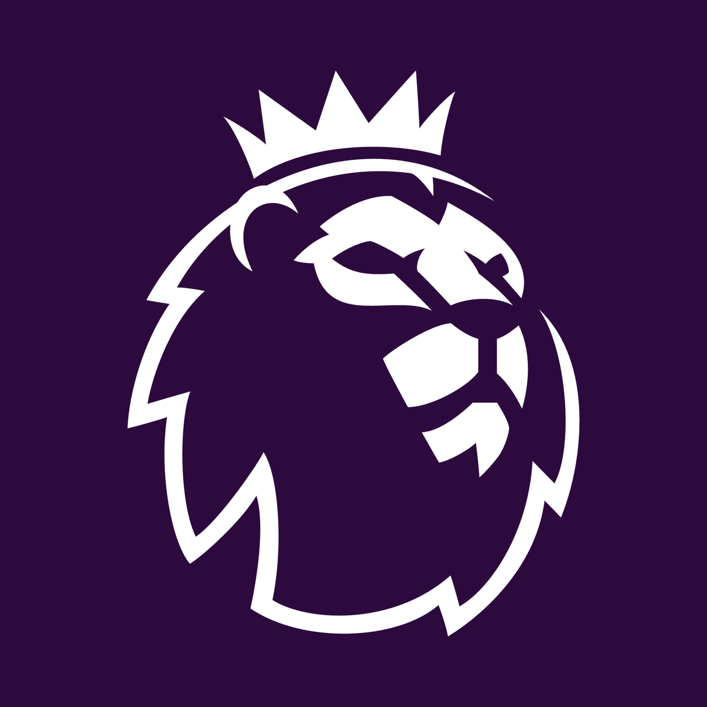

Premier League All Time Stats
There has been 7 teams that have won the premier league. The top 5 are: (FPL App)
Top 5 premier league winners
|
Manchester United |
Manchester City |
Chelsea |
Arsenal |
Liverpool |
| How many times won |
13 times |
9 times |
5 times |
3 times |
2 times |
Fun Facts about the Premier League
- Founded in 1992 after top-flight clubs broke away from the Football League to form a new, commercially independent competition.
- The league is broadcast in 212 territories and reaches over 643 million homes, making it the most-watched sports league globally.
- VAR was introduced in the 2019-20 season, and goal-line technology has been used since 2013-14.
- Promotion & relegation: Bottom three teams drop to the Championship; three teams are promoted each season.
- Leicester City's 2015-16 title win is widely considered one of the greatest sporting upsets in history.